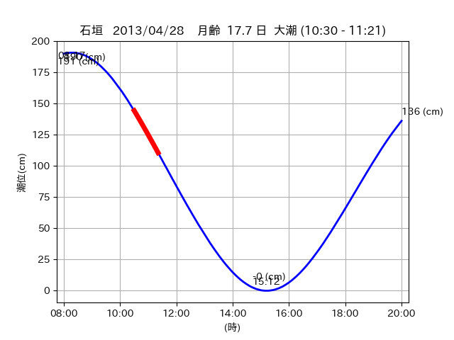

<!DOCTYPE html>
<html>
<head>
    
    <meta http-equiv="content-type" content="text/html; charset=UTF-8" />
    
        <script>
            L_NO_TOUCH = false;
            L_DISABLE_3D = false;
        </script>
    
    <style>html, body {width: 100%;height: 100%;margin: 0;padding: 0;}</style>
    <style>#map {position:absolute;top:0;bottom:0;right:0;left:0;}</style>
    <script src="https://cdn.jsdelivr.net/npm/leaflet@1.9.3/dist/leaflet.js"></script>
    <script src="https://code.jquery.com/jquery-3.7.1.min.js"></script>
    <script src="https://cdn.jsdelivr.net/npm/bootstrap@5.2.2/dist/js/bootstrap.bundle.min.js"></script>
    <script src="https://cdnjs.cloudflare.com/ajax/libs/Leaflet.awesome-markers/2.0.2/leaflet.awesome-markers.js"></script>
    <link rel="stylesheet" href="https://cdn.jsdelivr.net/npm/leaflet@1.9.3/dist/leaflet.css"/>
    <link rel="stylesheet" href="https://cdn.jsdelivr.net/npm/bootstrap@5.2.2/dist/css/bootstrap.min.css"/>
    <link rel="stylesheet" href="https://netdna.bootstrapcdn.com/bootstrap/3.0.0/css/bootstrap-glyphicons.css"/>
    <link rel="stylesheet" href="https://cdn.jsdelivr.net/npm/@fortawesome/fontawesome-free@6.2.0/css/all.min.css"/>
    <link rel="stylesheet" href="https://cdnjs.cloudflare.com/ajax/libs/Leaflet.awesome-markers/2.0.2/leaflet.awesome-markers.css"/>
    <link rel="stylesheet" href="https://cdn.jsdelivr.net/gh/python-visualization/folium/folium/templates/leaflet.awesome.rotate.min.css"/>
    
            <meta name="viewport" content="width=device-width,
                initial-scale=1.0, maximum-scale=1.0, user-scalable=no" />
            <style>
                #map_bbf9d78bbe0cd7eb7843bfb8669aab8a {
                    position: relative;
                    width: 2048.0px;
                    height: 1600.0px;
                    left: 0.0%;
                    top: 0.0%;
                }
                .leaflet-container { font-size: 1rem; }
            </style>
        
</head>
<body>
    
    
            <div class="folium-map" id="map_bbf9d78bbe0cd7eb7843bfb8669aab8a" ></div>
        
</body>
<script>
    
    
            var map_bbf9d78bbe0cd7eb7843bfb8669aab8a = L.map(
                "map_bbf9d78bbe0cd7eb7843bfb8669aab8a",
                {
                    center: [24.6, 124.301],
                    crs: L.CRS.EPSG3857,
                    ...{
  "zoom": 12,
  "zoomControl": true,
  "preferCanvas": false,
}

                }
            );

            

        
    
            var tile_layer_02b4ce27fea5ceb6f17f782b6510babb = L.tileLayer(
                "https://cyberjapandata.gsi.go.jp/xyz/seamlessphoto/{z}/{x}/{y}.jpg",
                {
  "minZoom": 0,
  "maxZoom": 18,
  "maxNativeZoom": 18,
  "noWrap": false,
  "attribution": "\u5730\u7406\u9662\u5730\u56f3",
  "subdomains": "abc",
  "detectRetina": false,
  "tms": false,
  "opacity": 1,
}

            );
        
    
            tile_layer_02b4ce27fea5ceb6f17f782b6510babb.addTo(map_bbf9d78bbe0cd7eb7843bfb8669aab8a);
        
    
            var marker_db0b368f931eee76aae2764e45d8a604 = L.marker(
                [24.6106, 124.3492],
                {
}
            ).addTo(map_bbf9d78bbe0cd7eb7843bfb8669aab8a);
        
    
            var icon_3be276baece42b96ba1e5266a22e1c18 = L.AwesomeMarkers.icon(
                {
  "markerColor": "orange",
  "iconColor": "white",
  "icon": "info-sign",
  "prefix": "glyphicon",
  "extraClasses": "fa-rotate-0",
}
            );
        
    
        var popup_982ea8a1309a2f32fc73c626a7eac84f = L.popup({
  "maxWidth": "100%",
});

        
            
                var html_8c95e2d446f99660b404ee68b7e537ab = $(`<div id="html_8c95e2d446f99660b404ee68b7e537ab" style="width: 100.0%; height: 100.0%;"><table><tr><td></td></tr><tr><td><center>20130428 No.1 </center></table></td></tr></table</div>`)[0];
                popup_982ea8a1309a2f32fc73c626a7eac84f.setContent(html_8c95e2d446f99660b404ee68b7e537ab);
            
        

        marker_db0b368f931eee76aae2764e45d8a604.bindPopup(popup_982ea8a1309a2f32fc73c626a7eac84f)
        ;

        
    
    
                marker_db0b368f931eee76aae2764e45d8a604.setIcon(icon_3be276baece42b96ba1e5266a22e1c18);
            
    
            var poly_line_a38aee33e3db55bbeeb131bc836bd96c = L.polyline(
                [[24.6106, 124.3492], [24.6139, 124.3452]],
                {"bubblingMouseEvents": true, "color": "#FF00FF", "dashArray": null, "dashOffset": null, "fill": false, "fillColor": "#FF00FF", "fillOpacity": 0.2, "fillRule": "evenodd", "lineCap": "round", "lineJoin": "round", "noClip": false, "opacity": 1.0, "smoothFactor": 1.0, "stroke": true, "weight": 3}
            ).addTo(map_bbf9d78bbe0cd7eb7843bfb8669aab8a);
        
    
            var marker_ae488315554b2bc72aa2a1a207d1bdea = L.marker(
                [24.6168, 124.34],
                {
}
            ).addTo(map_bbf9d78bbe0cd7eb7843bfb8669aab8a);
        
    
            var icon_a08893ea91a0e9aef90c60d04b1ddb47 = L.AwesomeMarkers.icon(
                {
  "markerColor": "orange",
  "iconColor": "white",
  "icon": "info-sign",
  "prefix": "glyphicon",
  "extraClasses": "fa-rotate-0",
}
            );
        
    
        var popup_e05fce6c835dca909314912adf2f2adf = L.popup({
  "maxWidth": "100%",
});

        
            
                var html_ce41b793f1e5bb68bbbd9b2255677f0f = $(`<div id="html_ce41b793f1e5bb68bbbd9b2255677f0f" style="width: 100.0%; height: 100.0%;"><table><tr><td></td></tr><tr><td><center>20130428 No.2 </center></table></td></tr></table</div>`)[0];
                popup_e05fce6c835dca909314912adf2f2adf.setContent(html_ce41b793f1e5bb68bbbd9b2255677f0f);
            
        

        marker_ae488315554b2bc72aa2a1a207d1bdea.bindPopup(popup_e05fce6c835dca909314912adf2f2adf)
        ;

        
    
    
                marker_ae488315554b2bc72aa2a1a207d1bdea.setIcon(icon_a08893ea91a0e9aef90c60d04b1ddb47);
            
    
            var poly_line_b28bdf58272e3d28e208c2b89b6c6372 = L.polyline(
                [[24.6168, 124.34], [24.6151, 124.3444]],
                {"bubblingMouseEvents": true, "color": "#00FFFF", "dashArray": null, "dashOffset": null, "fill": false, "fillColor": "#00FFFF", "fillOpacity": 0.2, "fillRule": "evenodd", "lineCap": "round", "lineJoin": "round", "noClip": false, "opacity": 1.0, "smoothFactor": 1.0, "stroke": true, "weight": 3}
            ).addTo(map_bbf9d78bbe0cd7eb7843bfb8669aab8a);
        
    
            var marker_4f61cf2648d13f608d460c0df476a708 = L.marker(
                [24.5975, 124.2999],
                {
}
            ).addTo(map_bbf9d78bbe0cd7eb7843bfb8669aab8a);
        
    
            var icon_3c8bcaad15c8971394e0db5a6e519769 = L.AwesomeMarkers.icon(
                {
  "markerColor": "orange",
  "iconColor": "white",
  "icon": "info-sign",
  "prefix": "glyphicon",
  "extraClasses": "fa-rotate-0",
}
            );
        
    
        var popup_8e2dcb9ba4eac80b66150a6642d8014d = L.popup({
  "maxWidth": "100%",
});

        
            
                var html_7b3988b0fc6ca3736d94215103a4d50d = $(`<div id="html_7b3988b0fc6ca3736d94215103a4d50d" style="width: 100.0%; height: 100.0%;"><table><tr><td></td></tr><tr><td><center>20130428 No.3 </center></table></td></tr></table</div>`)[0];
                popup_8e2dcb9ba4eac80b66150a6642d8014d.setContent(html_7b3988b0fc6ca3736d94215103a4d50d);
            
        

        marker_4f61cf2648d13f608d460c0df476a708.bindPopup(popup_8e2dcb9ba4eac80b66150a6642d8014d)
        ;

        
    
    
                marker_4f61cf2648d13f608d460c0df476a708.setIcon(icon_3c8bcaad15c8971394e0db5a6e519769);
            
    
            var poly_line_82b0959c93bf1779e016a3b0c093df93 = L.polyline(
                [[24.5975, 124.2999], [24.6033, 124.303]],
                {"bubblingMouseEvents": true, "color": "#FF00FF", "dashArray": null, "dashOffset": null, "fill": false, "fillColor": "#FF00FF", "fillOpacity": 0.2, "fillRule": "evenodd", "lineCap": "round", "lineJoin": "round", "noClip": false, "opacity": 1.0, "smoothFactor": 1.0, "stroke": true, "weight": 3}
            ).addTo(map_bbf9d78bbe0cd7eb7843bfb8669aab8a);
        
</script>
</html>